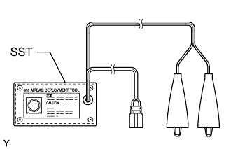
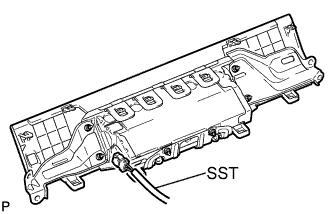
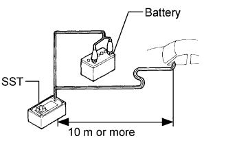
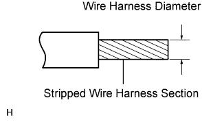
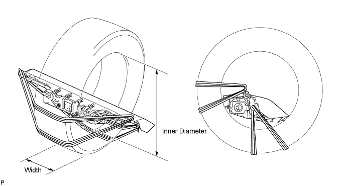
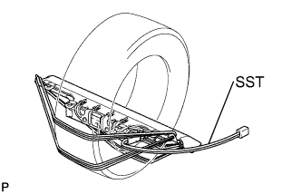
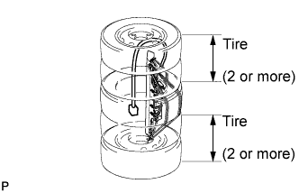
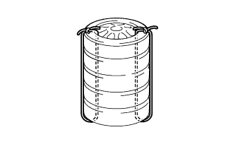
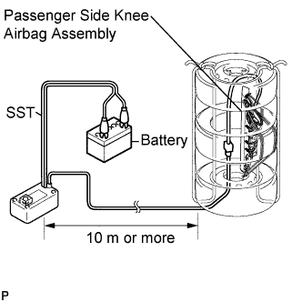
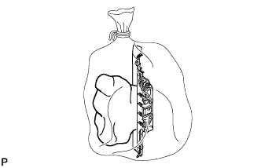

KNEE AIRBAG ASSEMBLY (for Front Passenger Side) > DISPOSAL |
| 1. DISPOSE OF FRONT PASSENGER SIDE KNEE AIRBAG ASSEMBLY (WHEN INSTALLED IN VEHICLE) |
 |
Check the function of SST (Click here).
Read the precaution (Click here).
Disconnect the cable from the negative (-) battery terminal.
Remove the front passenger side knee airbag (Click here).
 |
Install SST.
Connect SST connector to the front passenger side knee airbag.
Install the front passenger side knee airbag (Click here).
 |
Move SST at least 10 m (32.8 ft.) away from the vehicle front side window.
Maintaining enough clearance for SST wire harness in the front side window, close all doors and windows of the vehicle.
Connect the red clip of SST to the battery positive (+) terminal and the black clip of SST to the battery negative (-) terminal.
Deploy the airbag.
Check that no one is inside the vehicle or within a 10 m (32.8 ft.) radius of the vehicle.
Press SST activation switch to deploy the airbag.
| 2. DISPOSE OF FRONT PASSENGER SIDE KNEE AIRBAG ASSEMBLY (WHEN NOT INSTALLED IN VEHICLE) |
Check the function of SST (Click here).
Remove the front passenger side knee airbag (Click here).
 |
Using a service-purpose wire harness for the vehicle, tie down the front passenger side knee airbag to a tire.
Position the front passenger side knee airbag inside a tire with the airbag deployment side facing inside.

Tie the front passenger side knee airbag to the tire with several wire harnesses.
 |
Install SST.
Connect SST connector to the front passenger side knee airbag.
 |
Place tires.
Place at least 2 tires under the tire which the front passenger side knee airbag is tied to.
Place at least 2 tires over the tire which the front passenger side knee airbag is tied to. The top tire should have a disc wheel installed.
 |
Tie the tires together with 2 wire harnesses.
 |
Install SST.
Connect SST connector.
Deploy the airbag.
Connect the red clip of SST to the battery positive (+) terminal and the black clip of SST to the battery negative (-) terminal.
Check that no one is within a 10 m (32.8 ft.) radius of the tire which the front passenger side knee airbag is tied to.
Press SST activation switch to deploy the airbag.
 |
Dispose of the front passenger side knee airbag.
Remove the front passenger side knee airbag from the tire.
Place the front passenger side knee airbag in a plastic bag, tie it tightly and dispose of it in the same way as other general parts.